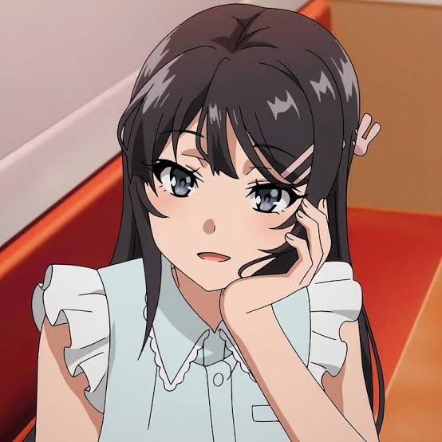

Sakuta Azusagawa

Sakuta Azusagawa adalah tokoh utama dalam anime ini. Sebagai seorang siswa SMA yang memiliki sindrom pubertas, Sakuta harus menghadapi berbagai tantangan yang membuatnya merasa terisolasi. Meskipun ia memiliki kecerdasan dan kepercayaan diri yang tinggi, Sakuta sering kali merasa kesepian. Kepribadiannya yang kompleks dan penuh rasa ingin tahu menjadikannya karakter yang sangat menarik untuk dikembangkan lebih lanjut.
Mai Sakurajima
Mai Sakurajima adalah seorang aktris muda yang terkenal, namun dia menghadapi fenomena aneh di mana tidak ada orang yang bisa melihatnya. Mai memiliki kecantikan yang luar biasa, tetapi ia juga terperangkap dalam pencarian jati dirinya. Konflik batin Mai yang mendalam membuatnya menjadi karakter yang sangat kuat dan relatable. Hubungannya dengan Sakuta menjadi salah satu inti dari cerita ini, dengan banyak momen emosional yang mengungkapkan kedalaman perasaan mereka.
Tomoe Koga

Tomoe Koga adalah karakter yang muncul setelah Sakuta bertemu dengan Mai. Tomoe memiliki karakter yang sangat ceria dan energik, namun di balik senyumannya, ia juga memiliki perasaan dan masalah yang tidak kalah berat. Sebagai seseorang yang mengalami fenomena aneh, Tomoe menjadi salah satu karakter yang menunjukkan betapa sulitnya beradaptasi dengan perubahan dalam kehidupan.